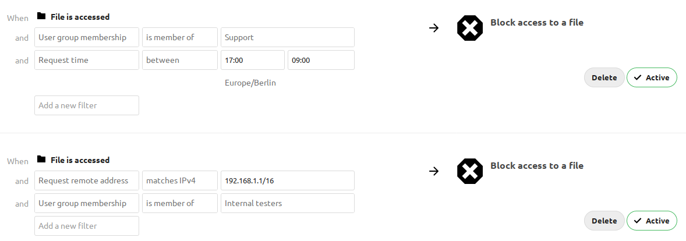
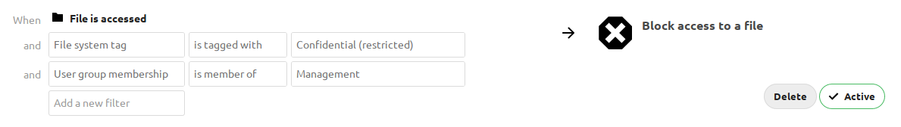
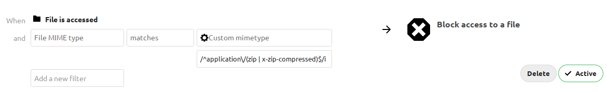

Files access control¶
Nextcloud’s File Access Control app enables administrators to create and manage a set of rule groups. Each of the rule groups consists of one or more rules. If all rules of a group hold true, the group matches the request and access is being denied. The rules criteria range from IP address, to user groups, collaborative tags and some more.
Denied access¶
If access to a file has been denied for a user, the user can not:
- Create/upload the file
- Modify the files
- Delete the file
- Download the file
- Syncronise the file with clients, such as the Nextcloud desktop and mobile clients
Examples¶
After installing the File Access Control app as described in Apps management navigate to the configuration and locate the File Access Control settings.

The first rule group Support only 9-5 denies any access to files for users
of the Support user group, between 5pm and 9am.
The second rule group Internal testing prevents users of the Internal
testers group to access files from outside of the local network.
Denying access to folders¶
The easiest way to block access to a folder, is to use a collaborative tag. As mentioned in the Available rules section below, either the file itself or one of the parents needs to have the given tag assigned.
So you just need to assign the tag to the folder or file, and then block the tag with a rule group. The check is independent of the user’s permissions for the tag. Therefor restricted and invisible tags are recommended, otherwise a user could remove and reassign the tag.
This example blocks access to any folder with the tag Confidential.

Prevent uploading of specific files¶
It’s possible to prevent specific files from being uploaded to Nextcloud. You simply need to define a rule based on the mimetype and our powerful access control engine will block any attempt to upload the file. The safest way to define the rule is to use a regular expression, as it will help you cover all the known media types used for the type of file you’re trying to block.
The following example prevents zip files from being uploaded by using the regular
expression: /^application\/(zip|x-zip-compressed)$/i

Common misconfigurations¶
Blocking user groups¶
When trying to deny access to a group of users, make sure that sharing does not allow them to create a way back in. When users are able to create a public link, the users can log themselves out and visit their own public link to access the files. Since at this point they are no user and therefor no member of the blocked group, they will be able to read and change the file.
The recommended work around is to create the same rule again, and deny access
for all users that are not member of a group, that contains all users of
your installation.
External storage¶
While access to files in external storages is not possible via Nextcloud, users
that have direct access to the external storage, can of course change files
there directly. Therefor it is recommended to disable the Allow users to mount
external storage option, when trying to to completely lock out users.
Available rules¶
All rules can also be inverted (from is to is not) using the operator
option.
File collaborative tag: Either the file itself, or any of the file owner’s parent folders needs to be tagged with the tag.
Note
Tags used in access control rules should be restricted tags, otherwise any user can remove the tag to access the file again. The best way to do this is with the Automated tagging of files.
File mimetype: The mimetype of the file, e.g.
text/plainFile name: The name of the file (
isandis notare case-insensitive)File size: The size of the file (Only available on upload)
Request remote address: An IP range (either v4 or v6) for the accessing user
Request time: Time span and timezone when the request happens
Request URL: The URL which requests the file. (This is the URL the file is served from, not the URL the user is currently looking at.)
Request user agent: The user agent of the users browser or client. Nextcloud desktop, Android and iOS clients are available as preconfigured options.
User group membership: Whether the user is a member of the given group.